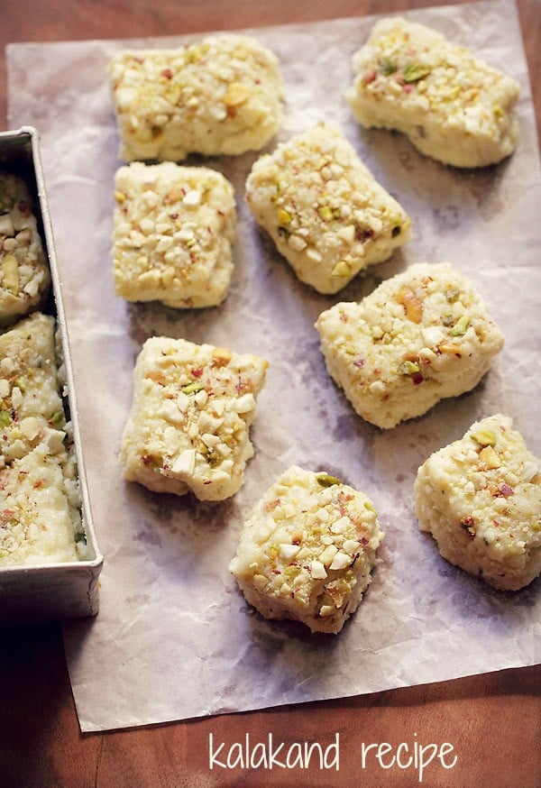

Kalakand Recipe (Indian Milk Cake)
Kalakand is a popular Indian sweet made with milk, sugar and a few flavorings. My three ingredient, super fast recipe for Kalakand (a.k.a. Indian Milk Cake) comes together in just 15 minutes thanks to the help of a can of sweetened condensed milk. This fudgy sweet is easy to customize and is naturally gluten free, making it the perfect dessert to celebrate with.
How to Make Kalakand Recipe
Make Kalakand Mixture
1. Grate or finely crumble 250 to 300 grams paneer to yield about 2 tightly packed cups.
2. Add 1 tin/can (400 grams) of sweetened condensed milk to a thick bottomed pan or kadai.
3. Add the grated or crumbled paneer to the condensed milk.
4. Mix very well.
5. I personally added 1 tablespoon of sugar to my batch. Add sugar according to your taste.
Cook Kalakand Mixture
6. Simmer this mixture over a low heat, stirring at intervals.
7. Meanwhile, grease a pan or a tray with some ghee or oil. You can also line it with parchment paper.
8. Remember to stir the mixture often so that it does not stick to the bottom of the pan.
9. The kalakand mixture will start thickening as it simmers and begins to cook.
10. When the mixture is well thickened and begins to leaves the sides of the pan, switch off the heat. The mixture should not look dry, there should still be some moisture like in the photo below.
11. Remove the pan from the heat.
Set Kalakand
12. Now pour the kalakand mixture in the prepared pan or plate.
13. Shake the pan so that the mixture spreads evenly. You can also level with a spoon or spatula.
Coarsely crush pistachios, saffron and cashews or almonds in a mortar-pestle. You can also opt slice or sliver the dry fruits, if using.
14. Sprinkle coarsely crushed dry fruits and/or thinly sliced or slivered dry fruits all over the kalakand.
15. Gently press the dry fruits into the milk cake with the back a spoon. Cover and allow the kalakand to cool completely at room temperature.
Cover with foil or lid and place in the fridge for a couple of hours to set.
16. This is the kalakand after setting in the fridge.
17. Slice kalakand with a knife. In case the kalakand didn’t set up properly, don’t fret. You can just serve it with a spoon like a halwa. It still tastes delicious!
Serve kalakand as a sweet or as a dessert. Keep any leftovers in an air-tight container in the fridge. This sweet keeps well for 2 to 3 days when refrigerated.